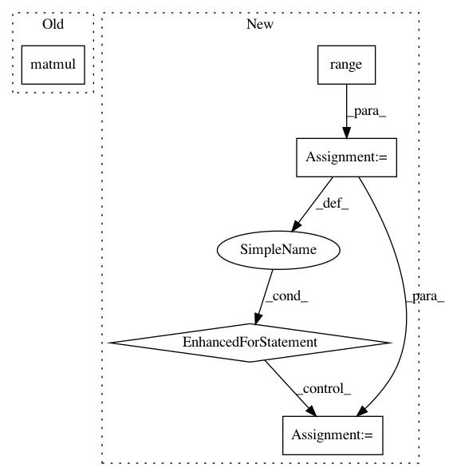

99ab85ce23fc9ad7c7b04e2ca047f641120539e0,src/skmultiflow/trees/multi_target_regression_hoeffding_tree.py,LearningNodePerceptron,update_weights,#LearningNodePerceptron#Any#Any#Any#Any#,150
Before Change
// TODO: Verify perceptron update
self.perceptron_weight += learning_ratio * \
np.matmul((normalized_target_value - normalized_pred)
.reshape((n_targets, 1)),
normalized_sample.reshape((1, n_features + 1)))
// Predicts new income instances as a multiplication of the neurons
// weights with the inputs augmented with a bias value
def predict(self, X):
After Change
normalized_sample.reshape((1, n_features + 1))
// Normalize perceptron weights
for i in range(n_targets):
sum_w = np.sum(np.absolute(self.perceptron_weight[i, :]))
self.perceptron_weight[i, :] /= sum_w
// Predicts new income instances as a multiplication of the neurons
// weights with the inputs augmented with a bias value
def predict(self, X):
return self.perceptron_weight @ X
def get_weight_seen(self):
In pattern: SUPERPATTERN
Frequency: 3
Non-data size: 5
Instances
Project Name: scikit-multiflow/scikit-multiflow
Commit Name: 99ab85ce23fc9ad7c7b04e2ca047f641120539e0
Time: 2018-09-07
Author: saulomastelini@gmail.com
File Name: src/skmultiflow/trees/multi_target_regression_hoeffding_tree.py
Class Name: LearningNodePerceptron
Method Name: update_weights
Project Name: geomstats/geomstats
Commit Name: 16d562f2d1a8df49fde1a2374c5e634a7400fd08
Time: 2018-02-04
Author: ninamio78@gmail.com
File Name: geomstats/special_euclidean_group.py
Class Name: SpecialEuclideanGroup
Method Name: group_exponential_barycenter
Project Name: geomstats/geomstats
Commit Name: 5c2ae503e85bfac2346ea7a562c476c943bb3ec9
Time: 2018-02-03
Author: ninamio78@gmail.com
File Name: geomstats/special_orthogonal_group.py
Class Name: SpecialOrthogonalGroup
Method Name: matrix_from_rotation_vector